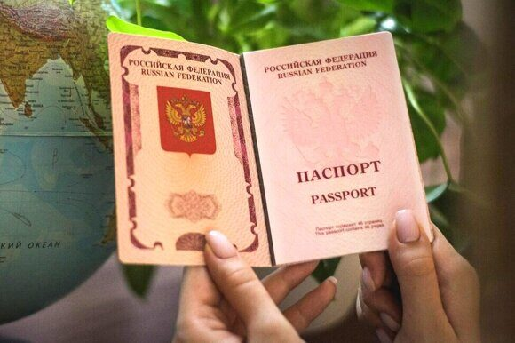

« НазадСоветы по оформлению загранпаспорта для граждан России Заграничный паспорт для граждан России является важным документом, открывающим возможность свободного передвижения за рубежом, участия в международных программах, обучении и работе в других странах. Наличие актуального загранпаспорта позволяет не только подтвердить гражданство, но и дает возможность получения виз, регистрации за границей и оформления многих юридических документов. Цель данной статьи – подробно разъяснить, какие документы необходимо подготовить для оформления загранпаспорта, а также описать порядок их подачи в различных инстанциях: через МВД, МФЦ, консульские отделы за рубежом или посредством портала Госуслуги. Кроме того, статья предоставляет практические рекомендации для ускорения процедуры и избежания типичных ошибок при оформлении документов. Перечень обязательных документов для оформления загранпаспорта для граждан РоссииОбщие сведенияЗагранпаспорт требуется:
Особое внимание уделяется загранпаспортам нового поколения, содержащим электронный носитель информации, который позволяет хранить биометрические данные владельца. Для таких паспортов предъявляются повышенные требования к данным, зарегистрированным в ведомственной системе. Несоблюдение стандартов оформления может привести к необходимости повторной подачи документов или отказу в выдаче паспорта. Документы для оформления загранпаспорта взрослогоЗаявление-анкета Одним из обязательных документов является заполненное заявление-анкета, которое содержит основные данные гражданина, необходимые для оформления заграничного паспорта. Особенности заполнения заявления включают:
Паспорт гражданина РФ (внутренний паспорт) Для подтверждения личности гражданина необходимо предоставить оригинал внутреннего паспорта. Особенности оформления включают:
Старый загранпаспорт (при наличии) Если ранее гражданину уже выдавался загранпаспорт, его необходимо предоставить в оригинале или заверенных копиях. В данном случае важно учесть следующие моменты:
Фотографии Одним из ключевых требований является предоставление фотографий, соответствующих установленным стандартам. Основные параметры включают:
Квитанция об оплате госпошлины Документальное подтверждение оплаты государственной пошлины является неотъемлемой частью заявки. Важно учитывать следующие аспекты:
Дополнительные документы В ряде случаев могут потребоваться дополнительные документы:
Особенности оформления загранпаспорта для детейПри оформлении загранпаспорта для несовершеннолетних граждан требуется соблюдение ряда дополнительных требований:
Порядок подачи документовЛичный визит и предварительная записьЛичная явка заявителя Главным условием подачи документов является личное присутствие заявителя. При этом следует учитывать следующие нюансы:
Предварительная запись Для ускорения процесса оформления документов многие учреждения требуют обязательную предварительную запись через онлайн-сервисы:
Важно соблюдать заявленное время визита, так как задержка или опоздание могут привести к необходимости повторной записи. Места подачи документовВнутри России При подаче документов внутри страны граждане могут обращаться:
Процесс подачи документов в отделениях УВМ МВД и МФЦ часто сопровождается предварительной категоризацией документов, что позволяет исключить повторное заполнение информации в случае обнаружения несоответствий. За рубежом Граждане, находящиеся за пределами РФ, имеют возможность оформления загранпаспорта через:
Особенности подачи документов за рубежом могут включать дополнительные сроки рассмотрения и уплату консульского сбора, что требует тщательной подготовки и уточнения информации на официальном сайте посольства. Особенности подачи заявки на загранпаспорт нового поколения Для паспортов нового поколения, оснащённых электронным носителем данных, предусмотрены дополнительные этапы:
Использование новых технологий в процессе подачи и обработки документов, что может включать более длительные сроки рассмотрения или специфические процедуры записи на приём. Процедура проверки и оформленияПроверка оригиналов и копий документов После подачи заявки проходит этап детальной проверки:
После успешной проверки происходит этап обработки заявления:
Получение паспорта Финальным этапом является получение загранпаспорта:
Передача паспорта сопровождается инструкциями по проверке и вскрытию конверта, что позволяет своевременно выявить возможные ошибки или повреждения. Практические рекомендацииПодготовка документовУспешное оформление загранпаспорта требует тщательной подготовки:
Проверка требований и обновленной информацииОфициальные правила оформления загранпаспорта периодически обновляются, поэтому важно:
Контроль оплаты госпошлиныПошлина за оформление паспорта является важной составляющей процедуры:
Часто задаваемые вопросы с подробными ответамиКакие документы нужно предоставить для оформления загранпаспорта взрослому гражданину? Для оформления загранпаспорта взрослому гражданину требуются заполненное заявление-анкета, действующий внутренний паспорт (оригинал и копии нужных страниц), старый загранпаспорт (если он есть), фотографии, квитанция об оплате госпошлины и, при необходимости, дополнительные документы (например, при изменении фамилии или иных личных данных). Обязательно ли лично посещать учреждение для подачи документов? Да, личное присутствие обязательно для подачи документов. Для оформления паспорта нового поколения гражданин должен лично явиться для снятия биометрических данных, а при оформлении для несовершеннолетних – один из родителей или законный представитель. Как правильно заполнить заявление-анкеты? Заявление необходимо заполнять печатными буквами, без пропусков, с тщательным соблюдением инструкций. Важно проверить наличие штрих-кода (если требуется) и убедиться в корректности всех внесенных данных. Рекомендуется свериться с образцами, доступными на официальных порталах госуслуг или сайта МВД. Какие требования предъявляются к фотографии для загранпаспорта? Фотография должна соответствовать стандартам, размер 35×45 мм, цветное изображение высокого разрешения, отсутствие головных уборов, очков с затемнёнными стеклами и иных аксессуаров, затрудняющих распознавание лица. Изображение не должно быть подвержено ретушированию, которое изменяет естественные черты лица. Можно ли оформить загранпаспорт ребенка без присутствия родителей? Нет, заявление на оформление загранпаспорта для ребенка заполняется и подается родителями или законными представителями. К заявке обязательно прилагается свидетельство о рождении и копии паспортов родителей для подтверждения родственных связей. Где можно подать документы на загранпаспорт? Документы можно подать в отделениях МВД или МФЦ на территории России. Для граждан, находящихся за рубежом, предусмотрены консульские отделы Российского Посольства или Генерального консульства. Как осуществляется предварительная запись на приём? Ответ: Предварительная запись осуществляется через портал Госуслуг или специальные региональные сервисы. Заявитель выбирает удобное время для визита, что позволяет избежать длительного ожидания и ускорить процесс оформления. Что делать, если данные в заявлении не совпадают с оригиналами документов? В случае несоответствия данных заявитель получит уведомление и будет проинструктирован о необходимости исправления ошибки. Рекомендуется тщательно проверять копии и оригиналы документов перед подачей. Можно ли оплатить госпошлину онлайн? Да, оплата госпошлины может производиться онлайн через портал Госуслуг, а также через банковские переводы и терминалы самообслуживания. Важно сохранить квитанцию об оплате для прикрепления к заявлению. Какие особенности оформления загранпаспорта нового поколения? Паспорта нового поколения включают электронный носитель данных, что требует дополнительных мер проверки, таких как биометрическая идентификация и цифровая подпись. Важно соблюдать все требования безопасности и инструкции, доступные на официальных ресурсах. Сколько времени занимает оформление загранпаспорта? Сроки оформления могут варьироваться – от нескольких дней до нескольких недель, в зависимости от загруженности отделения, типа паспорта и корректности поданных документов. Можно ли получить загранпаспорт через почту? Да, в некоторых случаях гражданин может выбрать получение загранпаспорта по почте, если для этого был предоставлен предварительно оплаченный конверт. Однако, первичная подача документов происходит лично. Что делать в случае отказа в оформлении загранпаспорта? Ответ: При отказе следует получить объяснения от сотрудников учреждения, выяснить причины и устранить выявленные недостатки в документах. После исправления ошибок можно повторно подать заявку. Как обновить сведения в загранпаспорте, если изменились личные данные? При изменении личных данных необходимо предоставить дополнительные документы, подтверждающие изменения (например, свидетельство о браке, решение суда). После этого проводится корректировка анкеты и проверки в новом заявлении. Какие особенности подачи документов за рубежом? Для граждан, находящихся за рубежом, оформление производится через консульские отделы посольств. Документы проходят проверку аналогично процедурам в России, но могут учитываться особенности законодательства принимающей страны. Какие документы требуются при оформлении загранпаспорта при изменении фамилии? При изменении фамилии вместе с заявлением необходимо предоставить документы, подтверждающие данное изменение – это может быть свидетельство о браке, официальный судебный документы или иные заверенные справки. Как проверять актуальность информации об изменениях в требованиях оформления загранпаспорта? Актуальную информацию следует регулярно искать на официальных сайтах МВД, МФЦ и портале Госуслуг. Также можно подписаться на обновления и уведомления от государственных структур, чтобы быть всегда в курсе последних изменений. ЗаключениеВ заключении можно подытожить, что оформление загранпаспорта – это многоступенчатый и в ряде случаев сложный процесс, требующий точного и своевременного соблюдения всех норм и правил. Ключевые выводы следующие:
Оформление загранпаспорта – это не только юридическая процедура, но и важный шаг в обеспечении безопасности, личной идентификации и комфорта гражданина при осуществлении международных поездок. Заблаговременная подготовка документов и внимательное отношение к деталям существенно сокращают сроки получения паспорта и предохраняют от возникновения дополнительных проблем. Своевременная проверка и обновление информации на официальных порталах государственных услуг и в отделениях МВД помогает всегда быть в курсе последних изменений в процедуре оформления паспорта. Отдельно стоит отметить значимость электронных систем и новых технологий, которые внедряются для упрощения процесса оформления. Использование портала Госуслуг позволяет не только записаться на приём, но и самостоятельно отслеживать статус заявки, получать уведомления о готовности паспорта и вносить необходимые коррективы, что существенно экономит время граждан. Независимо от того, оформляете ли вы паспорт впервые или обновляете его, подготовка всех необходимых документов, соблюдение инструкций и внимание к деталям являются залогом успешного прохождения всех этапов процедуры и быстрого получения загранпаспорта. Важно помнить, что любая ошибка на этапе подачи может привести к затягиванию процесса, а правильная организация и подготовка документов с самого начала – это ключевой фактор успешного оформления важного документа. Пользуйтесь актуальной информацией, проверенной на официальных порталах и сайтах государственных служб, чтобы быть уверенными в правильности подаваемых данных. Это поможет избежать необходимости повторно обращаться за разъяснениями и существенно сократить сроки получения паспорта. В конечном итоге, правильно оформленный загранпаспорт станет вашим надежным спутником в международных поездках и обеспечит ваше право на свободное передвижение и реализацию гражданских прав за рубежом. Срочное оформление загранпаспорта для взрослых и детейПаспортно-визовый центр «Север» предлагает услугу срочного оформления загранпаспорта для взрослых и детей – эффективное решение для тех, кому необходимо получить документ в кратчайшие сроки без лишних бюрократических проволочек. Мы гордимся тем, что уже более 25 лет успешно помогаем нашим клиентам решать вопросы паспортного обслуживания, работая в самом сердце Москвы. Наш центр отличается высоким профессионализмом, опытом и индивидуальным подходом к каждому клиенту. Мы знаем, что оформление загранпаспорта может быть непростым и требовать оперативного реагирования, поэтому наши специалисты делают всё, чтобы процесс подачи документов был максимально быстрым и удобным. Основные преимущества нашей услуги: Срочное оформление загранпаспорта для взрослых и детей Каждый заказ оформляется в ускоренном режиме, что позволяет минимизировать сроки получения загранпаспорта даже при необходимости экстренной подачи документов. Мы внимательно следим за тем, чтобы все требования официальных структур были выполнены безупречно. Полное сопровождение на всех этапах От первичной консультации и подготовки необходимых документов до личной встречи в учреждении – вы получаете квалифицированную помощь и поддержку опытных специалистов, которые знают все нюансы процедуры. Более 25 лет опыта работы Наш паспортно-визовый центр «Север» имеет безупречную репутацию и солидный опыт работы. Более двух десятилетий мы успешно обслуживаем жителей Москвы, обеспечивая им быстрый и надежный сервис. Удобное расположение в центре Москвы Наш офис находится в самом сердце столицы, что делает нас доступными для жителей и гостей города. Мы ценим ваше время и гарантируем оперативное решение вашего вопроса. Индивидуальный подход и гарантированный результат Мы понимаем, что у каждого клиента могут быть свои особенности оформления документов – будь то оформление для взрослых или для несовершеннолетних. Наши специалисты готовы предложить персонализированное обслуживание, учитывая все ваши потребности. Если вам нужно срочно оформить загранпаспорт, не тратьте время на долгие очереди и сложные процедуры – доверьтесь профессионалам из паспортно-визового центра «Север». Мы оперативно и грамотно оформим паспорт, учтя все нюансы и требования государственных служб. Для получения бесплатной консультации и записи на прием звоните по телефону +79255854195. Наши эксперты с радостью ответят на все ваши вопросы, помогут собрать правильный пакет документов и организуют процесс подачи заявки с максимальной оперативностью. Выбирая Паспортно-визовый центр «Север», вы получаете надежного партнера, готового помочь в любых паспортных вопросах. Доверьтесь нашему опыту и профессионализму – и ваш загранпаспорт будет оформлен быстро и без лишних хлопот!
|
Комментарии
Комментариев пока нет